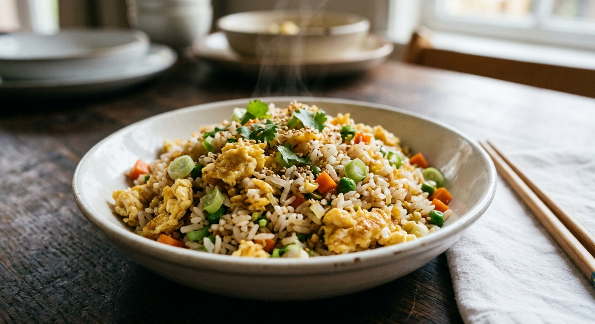

15-Minute Egg Fried Rice

Egg fried rice is the best way to turn leftover rice into dinner in about 15 minutes. Cold, day-old rice fries up fluffy and separate, with golden bits of egg, sweet peas and carrots, and plenty of garlic.
The method is simple: scramble the eggs first, stir-fry the vegetables, then add the rice and sauce.
Ingredients
- 3 cups cooked, cold rice (about 1 cup uncooked)
- 3 tbsp neutral oil, divided
- 3 large eggs, beaten
- 1 cup frozen peas and carrots, thawed
- 2 cloves garlic, minced
- 3 green onions, sliced
- 2 to 3 tbsp soy sauce
- 1 tsp toasted sesame oil
- Black pepper, to taste
Instructions
- Heat 1 tbsp oil in a large skillet or wok over medium-high heat. Add the eggs and scramble until just set. Transfer to a plate.
- Add the remaining 2 tbsp oil. Cook the garlic and peas and carrots for 2 minutes.
- Add the cold rice and break up any clumps. Stir-fry for 3 to 4 minutes until hot and lightly toasted.
- Add the soy sauce and toss to coat. Return the eggs to the pan.
- Turn off the heat, stir in the sesame oil and green onions, and season with pepper. Serve hot.
Ingredient Notes and Substitutions
Rice
Day-old rice is drier and fries better. If you only have fresh rice, spread it on a tray and chill it in the refrigerator for 30 minutes.
Soy sauce
Start with 2 tablespoons and add more to taste, since brands differ in saltiness.
Tips for Success
- Use high heat and a large pan so the rice fries rather than steams.
- Break up the rice with a spatula before adding the sauce.
- Have everything chopped before you start. It cooks fast.
Variations
- Add diced cooked chicken, ham or shrimp.
- Stir in a spoonful of chili crisp or sriracha.
Storage and Make-Ahead
Refrigerate leftovers within 2 hours in an airtight container for up to 3 days. Reheat until steaming hot. Cooked rice should be cooled and refrigerated promptly.
Frequently Asked Questions
Why is my fried rice mushy?
Usually fresh, wet rice or too low a heat. Use cold, day-old rice and a hot pan.
Can I use brown rice?
Yes. It gives a chewier, nuttier result.
Can I make it gluten-free?
Use tamari or a gluten-free soy sauce.